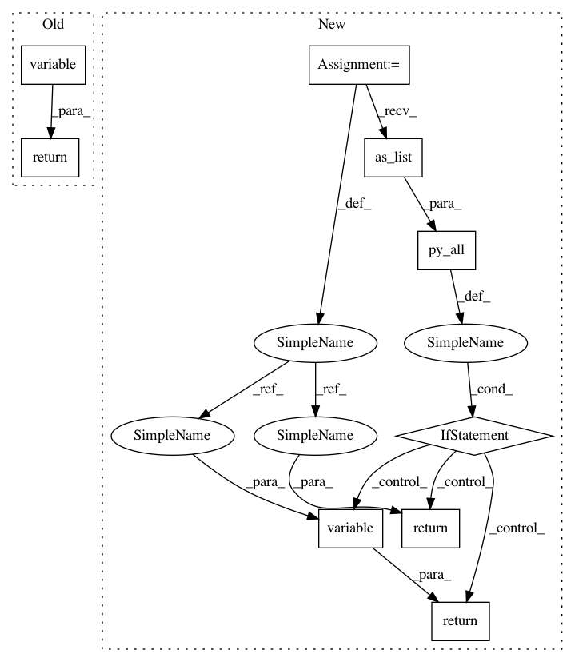

dec0c7b7aeddab2b31b55ccb015d7e0735206d59,keras/backend/tensorflow_backend.py,,ones,#Any#Any#Any#,684
Before Change
if dtype is None:
dtype = floatx()
tf_dtype = tf.as_dtype(dtype)
return variable(tf.constant_initializer(1., dtype=tf_dtype)(shape),
dtype, name)
def eye(size, dtype=None, name=None):
Instantiate an identity matrix and returns it.
After Change
if dtype is None:
dtype = floatx()
tf_dtype = tf.as_dtype(dtype)
v = tf.ones(shape=shape, dtype=tf_dtype, name=name)
if py_all(v.get_shape().as_list()):
return variable(v, dtype=dtype, name=name)
return v
def eye(size, dtype=None, name=None):
Instantiate an identity matrix and returns it.
In pattern: SUPERPATTERN
Frequency: 3
Non-data size: 9
Instances
Project Name: keras-team/keras
Commit Name: dec0c7b7aeddab2b31b55ccb015d7e0735206d59
Time: 2017-12-02
Author: francois.chollet@gmail.com
File Name: keras/backend/tensorflow_backend.py
Class Name:
Method Name: ones
Project Name: keras-team/keras
Commit Name: e361a26463bfda37c42acd3df1e4efb6d97215fe
Time: 2019-04-06
Author: francois.chollet@gmail.com
File Name: keras/backend/tensorflow_backend.py
Class Name:
Method Name: eye
Project Name: keras-team/keras
Commit Name: dec0c7b7aeddab2b31b55ccb015d7e0735206d59
Time: 2017-12-02
Author: francois.chollet@gmail.com
File Name: keras/backend/tensorflow_backend.py
Class Name:
Method Name: zeros